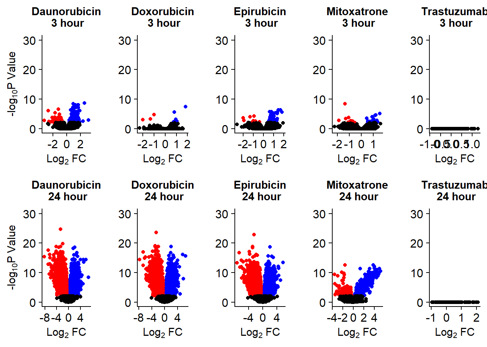

Inital RNA-seq analysis, Pairwise
ERM
20230414
Last updated: 2023-09-25
Checks: 7 0
Knit directory: Cardiotoxicity/
This reproducible R Markdown analysis was created with workflowr (version 1.7.1). The Checks tab describes the reproducibility checks that were applied when the results were created. The Past versions tab lists the development history.
Great! Since the R Markdown file has been committed to the Git repository, you know the exact version of the code that produced these results.
Great job! The global environment was empty. Objects defined in the global environment can affect the analysis in your R Markdown file in unknown ways. For reproduciblity it’s best to always run the code in an empty environment.
The command set.seed(20230109) was run prior to running
the code in the R Markdown file. Setting a seed ensures that any results
that rely on randomness, e.g. subsampling or permutations, are
reproducible.
Great job! Recording the operating system, R version, and package versions is critical for reproducibility.
Nice! There were no cached chunks for this analysis, so you can be confident that you successfully produced the results during this run.
Great job! Using relative paths to the files within your workflowr project makes it easier to run your code on other machines.
Great! You are using Git for version control. Tracking code development and connecting the code version to the results is critical for reproducibility.
The results in this page were generated with repository version b936755. See the Past versions tab to see a history of the changes made to the R Markdown and HTML files.
Note that you need to be careful to ensure that all relevant files for
the analysis have been committed to Git prior to generating the results
(you can use wflow_publish or
wflow_git_commit). workflowr only checks the R Markdown
file, but you know if there are other scripts or data files that it
depends on. Below is the status of the Git repository when the results
were generated:
Ignored files:
Ignored: .RData
Ignored: .Rhistory
Ignored: .Rproj.user/
Ignored: data/41588_2018_171_MOESM3_ESMeQTL_ST2_for paper.csv
Ignored: data/Arr_GWAS.txt
Ignored: data/Arr_geneset.RDS
Ignored: data/BC_cell_lines.csv
Ignored: data/BurridgeDOXTOX.RDS
Ignored: data/CADGWASgene_table.csv
Ignored: data/CAD_geneset.RDS
Ignored: data/CALIMA_Data/
Ignored: data/Clamp_Summary.csv
Ignored: data/Cormotif_24_k1-5_raw.RDS
Ignored: data/Counts_RNA_ERMatthews.txt
Ignored: data/DAgostres24.RDS
Ignored: data/DAtable1.csv
Ignored: data/DDEMresp_list.csv
Ignored: data/DDE_reQTL.txt
Ignored: data/DDEresp_list.csv
Ignored: data/DEG-GO/
Ignored: data/DEG_cormotif.RDS
Ignored: data/DF_Plate_Peak.csv
Ignored: data/DRC48hoursdata.csv
Ignored: data/Da24counts.txt
Ignored: data/Dx24counts.txt
Ignored: data/Dx_reQTL_specific.txt
Ignored: data/EPIstorelist24.RDS
Ignored: data/Ep24counts.txt
Ignored: data/Full_LD_rep.csv
Ignored: data/GOIsig.csv
Ignored: data/GOplots.R
Ignored: data/GTEX_setsimple.csv
Ignored: data/GTEX_sig24.RDS
Ignored: data/GTEx_gene_list.csv
Ignored: data/HFGWASgene_table.csv
Ignored: data/HF_geneset.RDS
Ignored: data/Heart_Left_Ventricle.v8.egenes.txt
Ignored: data/Heatmap_mat.RDS
Ignored: data/Heatmap_sig.RDS
Ignored: data/Hf_GWAS.txt
Ignored: data/K_cluster
Ignored: data/K_cluster_kisthree.csv
Ignored: data/K_cluster_kistwo.csv
Ignored: data/LD50_05via.csv
Ignored: data/LDH48hoursdata.csv
Ignored: data/Mt24counts.txt
Ignored: data/NoRespDEG_final.csv
Ignored: data/RINsamplelist.txt
Ignored: data/Seonane2019supp1.txt
Ignored: data/TMMnormed_x.RDS
Ignored: data/TOP2Bi-24hoursGO_analysis.csv
Ignored: data/TR24counts.txt
Ignored: data/TableS10.csv
Ignored: data/TableS11.csv
Ignored: data/TableS9.csv
Ignored: data/Top2biresp_cluster24h.csv
Ignored: data/Var_test_list.RDS
Ignored: data/Var_test_list24.RDS
Ignored: data/Var_test_list24alt.RDS
Ignored: data/Var_test_list3.RDS
Ignored: data/Vargenes.RDS
Ignored: data/Viabilitylistfull.csv
Ignored: data/allexpressedgenes.txt
Ignored: data/allfinal3hour.RDS
Ignored: data/allgenes.txt
Ignored: data/allmatrix.RDS
Ignored: data/allmymatrix.RDS
Ignored: data/annotation_data_frame.RDS
Ignored: data/averageviabilitytable.RDS
Ignored: data/avgLD50.RDS
Ignored: data/avg_LD50.RDS
Ignored: data/backGL.txt
Ignored: data/burr_genes.RDS
Ignored: data/calcium_data.RDS
Ignored: data/clamp_summary.RDS
Ignored: data/cormotif_3hk1-8.RDS
Ignored: data/cormotif_initalK5.RDS
Ignored: data/cormotif_initialK5.RDS
Ignored: data/cormotif_initialall.RDS
Ignored: data/cormotifprobs.csv
Ignored: data/counts24hours.RDS
Ignored: data/cpmcount.RDS
Ignored: data/cpmnorm_counts.csv
Ignored: data/crispr_genes.csv
Ignored: data/ctnnt_results.txt
Ignored: data/cvd_GWAS.txt
Ignored: data/dat_cpm.RDS
Ignored: data/data_outline.txt
Ignored: data/drug_noveh1.csv
Ignored: data/efit2.RDS
Ignored: data/efit2_final.RDS
Ignored: data/efit2results.RDS
Ignored: data/ensembl_backup.RDS
Ignored: data/ensgtotal.txt
Ignored: data/filcpm_counts.RDS
Ignored: data/filenameonly.txt
Ignored: data/filtered_cpm_counts.csv
Ignored: data/filtered_raw_counts.csv
Ignored: data/filtermatrix_x.RDS
Ignored: data/folder_05top/
Ignored: data/geneDoxonlyQTL.csv
Ignored: data/gene_corr_df.RDS
Ignored: data/gene_corr_frame.RDS
Ignored: data/gene_prob_tran3h.RDS
Ignored: data/gene_probabilityk5.RDS
Ignored: data/geneset_24.RDS
Ignored: data/gostresTop2bi_ER.RDS
Ignored: data/gostresTop2bi_LR
Ignored: data/gostresTop2bi_LR.RDS
Ignored: data/gostresTop2bi_TI.RDS
Ignored: data/gostrescoNR
Ignored: data/gtex/
Ignored: data/heartgenes.csv
Ignored: data/hsa_kegg_anno.RDS
Ignored: data/individualDRCfile.RDS
Ignored: data/individual_DRC48.RDS
Ignored: data/individual_LDH48.RDS
Ignored: data/indv_noveh1.csv
Ignored: data/kegglistDEG.RDS
Ignored: data/kegglistDEG24.RDS
Ignored: data/kegglistDEG3.RDS
Ignored: data/knowfig4.csv
Ignored: data/knowfig5.csv
Ignored: data/label_list.RDS
Ignored: data/ld50_table.csv
Ignored: data/mean_vardrug1.csv
Ignored: data/mean_varframe.csv
Ignored: data/mymatrix.RDS
Ignored: data/new_ld50avg.RDS
Ignored: data/nonresponse_cluster24h.csv
Ignored: data/norm_LDH.csv
Ignored: data/norm_counts.csv
Ignored: data/old_sets/
Ignored: data/organized_drugframe.csv
Ignored: data/plan2plot.png
Ignored: data/plot_intv_list.RDS
Ignored: data/plot_list_DRC.RDS
Ignored: data/qval24hr.RDS
Ignored: data/qval3hr.RDS
Ignored: data/qvalueEPItemp.RDS
Ignored: data/raw_counts.csv
Ignored: data/response_cluster24h.csv
Ignored: data/sigVDA24.txt
Ignored: data/sigVDA3.txt
Ignored: data/sigVDX24.txt
Ignored: data/sigVDX3.txt
Ignored: data/sigVEP24.txt
Ignored: data/sigVEP3.txt
Ignored: data/sigVMT24.txt
Ignored: data/sigVMT3.txt
Ignored: data/sigVTR24.txt
Ignored: data/sigVTR3.txt
Ignored: data/siglist.RDS
Ignored: data/siglist_final.RDS
Ignored: data/siglist_old.RDS
Ignored: data/slope_table.csv
Ignored: data/supp10_24hlist.RDS
Ignored: data/supp10_3hlist.RDS
Ignored: data/supp_normLDH48.RDS
Ignored: data/supp_pca_all_anno.RDS
Ignored: data/table3a.omar
Ignored: data/testlist.txt
Ignored: data/toplistall.RDS
Ignored: data/trtonly_24h_genes.RDS
Ignored: data/trtonly_3h_genes.RDS
Ignored: data/tvl24hour.txt
Ignored: data/tvl24hourw.txt
Ignored: data/venn_code.R
Ignored: data/viability.RDS
Untracked files:
Untracked: .RDataTmp
Untracked: .RDataTmp1
Untracked: .RDataTmp2
Untracked: 3hr all.pdf
Untracked: Code_files_list.csv
Untracked: Data_files_list.csv
Untracked: Doxorubicin_vehicle_3_24.csv
Untracked: Doxtoplist.csv
Untracked: EPIqvalue_analysis.Rmd
Untracked: GWAS_list_of_interest.xlsx
Untracked: KEGGpathwaylist.R
Untracked: OmicNavigator_learn.R
Untracked: SigDoxtoplist.csv
Untracked: analysis/ciFIT.R
Untracked: analysis/export_to_excel.R
Untracked: cleanupfiles_script.R
Untracked: code/biomart_gene_names.R
Untracked: code/constantcode.R
Untracked: code/cpm_boxplot.R
Untracked: code/extracting_ggplot_data.R
Untracked: code/movingfilesto_ppl.R
Untracked: code/pearson_extract_func.R
Untracked: code/pearson_tox_extract.R
Untracked: code/plot1C.fun.R
Untracked: code/spearman_extract_func.R
Untracked: code/venndiagramcolor_control.R
Untracked: cormotif_p.post.list_4.csv
Untracked: figS1024h.pdf
Untracked: individual-legenddark2.png
Untracked: installed_old.rda
Untracked: motif_ER.txt
Untracked: motif_LR.txt
Untracked: motif_NR.txt
Untracked: motif_TI.txt
Untracked: output/DNR_DEGlist.csv
Untracked: output/DNRvenn.RDS
Untracked: output/DOX_DEGlist.csv
Untracked: output/DOXvenn.RDS
Untracked: output/EPI_DEGlist.csv
Untracked: output/EPIvenn.RDS
Untracked: output/Figures/
Untracked: output/MTX_DEGlist.csv
Untracked: output/MTXvenn.RDS
Untracked: output/TRZ_DEGlist.csv
Untracked: output/TableS8.csv
Untracked: output/Volcanoplot_10
Untracked: output/Volcanoplot_10.RDS
Untracked: output/allfinal_sup10.RDS
Untracked: output/cormotif_probability_genelist.csv
Untracked: output/endocytosisgenes.csv
Untracked: output/gene_corr_fig9.RDS
Untracked: output/legend_b.RDS
Untracked: output/motif_ERrep.RDS
Untracked: output/motif_LRrep.RDS
Untracked: output/motif_NRrep.RDS
Untracked: output/motif_TI_rep.RDS
Untracked: output/output-old/
Untracked: output/rank24genes.csv
Untracked: output/rank3genes.csv
Untracked: output/reneem@ls6.tacc.utexas.edu
Untracked: output/sequencinginformationforsupp.csv
Untracked: output/sequencinginformationforsupp.prn
Untracked: output/supplementary_motif_list_GO.RDS
Untracked: output/toptablebydrug.RDS
Untracked: output/x_counts.RDS
Untracked: reneebasecode.R
Unstaged changes:
Deleted: analysis/Cardiotoxicity.Rproj
Modified: analysis/Cormotifcluster_analysis.Rmd
Modified: analysis/Figure5.Rmd
Modified: analysis/GOI_plots.Rmd
Modified: analysis/Knowles2019.Rmd
Modified: analysis/Supplementary_figures.Rmd
Modified: analysis/variance_scrip.Rmd
Modified: output/TNNI_LDH_RNAnormlist.txt
Modified: output/daplot.RDS
Modified: output/dxplot.RDS
Modified: output/epplot.RDS
Modified: output/mtplot.RDS
Modified: output/plan2plot.png
Modified: output/sequencing_info.txt
Modified: output/toplistall.csv
Modified: output/trplot.RDS
Modified: output/veplot.RDS
Note that any generated files, e.g. HTML, png, CSS, etc., are not included in this status report because it is ok for generated content to have uncommitted changes.
These are the previous versions of the repository in which changes were
made to the R Markdown (analysis/run_all_analysis.Rmd) and
HTML (docs/run_all_analysis.html) files. If you’ve
configured a remote Git repository (see ?wflow_git_remote),
click on the hyperlinks in the table below to view the files as they
were in that past version.
| File | Version | Author | Date | Message |
|---|---|---|---|---|
| html | b936755 | reneeisnowhere | 2023-09-25 | Build site. |
| Rmd | 5be5b86 | reneeisnowhere | 2023-09-25 | added tracked files and css |
| html | aeeade4 | reneeisnowhere | 2023-09-25 | Build site. |
| Rmd | e93b23c | reneeisnowhere | 2023-09-25 | updated code, try to add css |
| Rmd | 27e6962 | reneeisnowhere | 2023-09-25 | updated code, took out unneeded comments, turned on |
| Rmd | 06800c9 | reneeisnowhere | 2023-07-26 | Commits to small changes and edits |
| Rmd | 4eac3d2 | reneeisnowhere | 2023-07-03 | rearraged some lines, no changes |
| Rmd | f4bd5e1 | reneeisnowhere | 2023-06-27 | checking code changes overtime |
| Rmd | 326973b | reneeisnowhere | 2023-06-26 | updates on Volcano plot grid |
| Rmd | 3257e1c | reneeisnowhere | 2023-06-26 | Updating savefile for efit2 |
| html | 8daa38a | reneeisnowhere | 2023-05-26 | Build site. |
| Rmd | f99a753 | reneeisnowhere | 2023-05-26 | volcano plot limits added |
| Rmd | 8d87a52 | reneeisnowhere | 2023-05-17 | end of day |
| html | bdbf1c2 | reneeisnowhere | 2023-04-21 | Build site. |
| Rmd | 5a99763 | reneeisnowhere | 2023-04-21 | correct graph to log 2! |
| html | 1f4237c | reneeisnowhere | 2023-04-20 | Build site. |
| Rmd | 13e7b3d | reneeisnowhere | 2023-04-20 | updatedsequences graph with bar at 20,000,000 |
| html | 5ef62c9 | reneeisnowhere | 2023-04-17 | Build site. |
| Rmd | 8a5a1e1 | reneeisnowhere | 2023-04-17 | update html page |
| html | 7f62d67 | reneeisnowhere | 2023-04-17 | Build site. |
| Rmd | 363ddad | reneeisnowhere | 2023-04-17 | update with GO links |
| html | 21fd945 | reneeisnowhere | 2023-04-17 | Build site. |
| Rmd | e1c63d9 | reneeisnowhere | 2023-04-17 | wflow_publish("analysis/run_all_analysis.Rmd") |
| html | 8221ec3 | reneeisnowhere | 2023-04-16 | Build site. |
| Rmd | 9e88c22 | reneeisnowhere | 2023-04-16 | updated run data |
| Rmd | 6d925a2 | reneeisnowhere | 2023-04-16 | updating cormotif with updated RNAseq counts |
| html | 8d08bd2 | reneeisnowhere | 2023-04-11 | Build site. |
| Rmd | 0aaa63d | reneeisnowhere | 2023-04-11 | cormotif analysis update |
| Rmd | 575fd81 | reneeisnowhere | 2023-04-11 | updating cormotif |
| html | 4cd8ac4 | reneeisnowhere | 2023-04-11 | Build site. |
| html | 08936e7 | reneeisnowhere | 2023-04-10 | Build site. |
| Rmd | fa2cbeb | reneeisnowhere | 2023-04-10 | monday end |
| html | 85526c5 | reneeisnowhere | 2023-04-10 | Build site. |
| Rmd | 1444a85 | reneeisnowhere | 2023-04-10 | update push of new data |
| html | b266b76 | reneeisnowhere | 2023-04-10 | Build site. |
| Rmd | d3f8cf7 | reneeisnowhere | 2023-04-10 | update push of new data |
| html | f0a75e1 | reneeisnowhere | 2023-04-10 | Build site. |
| Rmd | 8ca4c7e | reneeisnowhere | 2023-04-10 | first rmd commit |
| Rmd | 2e69969 | reneeisnowhere | 2023-04-10 | adding data |
| Rmd | 0f1f1da | reneeisnowhere | 2023-04-10 | final run analysis |
This starts the documentation of the RNA-seq cardiotoxicity analysis for my cardiotoxicity data.
library(edgeR)#
library(limma)#
library(RColorBrewer)
library(gridExtra)#
library(reshape2)#
library(data.table)
library(tidyverse)
library(scales)
library(biomaRt)#
library(cowplot)#
library(ggrepel)#
library(corrplot)
library(Hmisc)
library(ggpubr)pca_plot <-
function(df,
col_var = NULL,
shape_var = NULL,
title = "") {
ggplot(df) + geom_point(aes_string(
x = "PC1",
y = "PC2",
color = col_var,
shape = shape_var
),
size = 5) +
labs(title = title, x = "PC 1", y = "PC2") +
scale_color_manual(values = c(
"#8B006D",
"#DF707E",
"#F1B72B",
"#3386DD",
"#707031",
"#41B333"
))
}
pca_var_plot <- function(pca) {
# x: class == prcomp
pca.var <- pca$sdev ^ 2
pca.prop <- pca.var / sum(pca.var)
var.plot <-
qplot(PC, prop, data = data.frame(PC = 1:length(pca.prop),
prop = pca.prop)) +
labs(title = 'Variance contributed by each PC',
x = 'PC', y = 'Proportion of variance')
}
calc_pca <- function(x) {
# Performs principal components analysis with prcomp
# x: a sample-by-gene numeric matrix
prcomp(x, scale. = TRUE, retx = TRUE)
}
get_regr_pval <- function(mod) {
# Returns the p-value for the Fstatistic of a linear model
# mod: class lm
stopifnot(class(mod) == "lm")
fstat <- summary(mod)$fstatistic
pval <- 1 - pf(fstat[1], fstat[2], fstat[3])
return(pval)
}
plot_versus_pc <- function(df, pc_num, fac) {
# df: data.frame
# pc_num: numeric, specific PC for plotting
# fac: column name of df for plotting against PC
pc_char <- paste0("PC", pc_num)
# Calculate F-statistic p-value for linear model
pval <- get_regr_pval(lm(df[, pc_char] ~ df[, fac]))
if (is.numeric(df[, f])) {
ggplot(df, aes_string(x = f, y = pc_char)) + geom_point() +
geom_smooth(method = "lm") + labs(title = sprintf("p-val: %.2f", pval))
} else {
ggplot(df, aes_string(x = f, y = pc_char)) + geom_boxplot() +
labs(title = sprintf("p-val: %.2f", pval))
}
}
x_axis_labels = function(labels, every_nth = 1, ...) {
axis(side = 1,
at = seq_along(labels),
labels = F)
text(
x = (seq_along(labels))[seq_len(every_nth) == 1],
y = par("usr")[3] - 0.075 * (par("usr")[4] - par("usr")[3]),
labels = labels[seq_len(every_nth) == 1],
xpd = TRUE,
...
)
}Initial RNA-seq quality checks
drug_palc <- c("#8B006D","#DF707E","#F1B72B", "#3386DD","#707031","#41B333")
seq_info %>%
filter(type=="Total_reads") %>%
ggplot(., aes (x =samplenames, y=count, fill = drug, group_by=indv))+
geom_col()+
geom_hline(aes(yintercept=20000000))+
scale_fill_manual(values=drug_palc)+
ggtitle(expression("Total number of reads by sample"))+
xlab("")+
ylab(expression("RNA -sequencing reads"))+
theme_bw()+
theme(plot.title = element_text(size = rel(2), hjust = 0.5),
axis.title = element_text(size = 15, color = "black"),
axis.ticks = element_line(linewidth = 1.5),
axis.line = element_line(linewidth = 1.5),
axis.text.y = element_text(size =10, color = "black", angle = 0, hjust = 0.8, vjust = 0.5),
axis.text.x = element_text(size =10, color = "black", angle = 90, hjust = 1, vjust = 0.2),
#strip.text.x = element_text(size = 15, color = "black", face = "bold"),
strip.text.y = element_text(color = "white"))
seq_info %>%
filter(type=="Total_reads") %>%
ggplot(., aes (x =drug, y=count, fill = drug))+
geom_boxplot()+
scale_fill_manual(values=drug_palc)+
ggtitle(expression("Total number of reads by treatment"))+
xlab("")+
ylab(expression("RNA -sequencing reads"))+
theme_bw()+
theme(plot.title = element_text(size = rel(2), hjust = 0.5),
axis.title = element_text(size = 15, color = "black"),
axis.ticks = element_line(linewidth = 1.5),
axis.line = element_line(linewidth = 1.5),
axis.text.y = element_text(size =10, color = "black", angle = 0, hjust = 0.8, vjust = 0.5),
axis.text.x = element_text(size =10, color = "black", angle = 90, hjust = 1, vjust = 0.2),
#strip.text.x = element_text(size = 15, color = "black", face = "bold"),
strip.text.y = element_text(color = "white"))
seq_info %>%
filter(type=="Total_reads") %>%
ggplot(., aes (x =as.factor(indv), y=count))+
geom_boxplot(aes(fill=as.factor(indv)))+
scale_fill_brewer(palette = "Dark2", name = "Individual")+
ggtitle(expression("Total number of reads by individual"))+
xlab("")+
ylab(expression("RNA -sequencing reads"))+
theme_bw()+
theme(plot.title = element_text(size = rel(2), hjust = 0.5),
axis.title = element_text(size = 15, color = "black"),
axis.ticks = element_line(linewidth = 1.5),
axis.line = element_line(linewidth = 1.5),
axis.text.y = element_text(size =10, color = "black", angle = 0, hjust = 0.8, vjust = 0.5),
axis.text.x = element_text(size =10, color = "black", angle = 0, hjust = 1),
#strip.text.x = element_text(size = 15, color = "black", face = "bold"),
strip.text.y = element_text(color = "white"))
seq_info %>%
filter(type=="Mapped_reads") %>%
ggplot(., aes (x =samplenames, y=count, fill = drug, group_by=indv))+
geom_col()+
geom_hline(aes(yintercept=20000000))+
scale_fill_manual(values=drug_palc)+
ggtitle(expression("Total number of mapped reads by sample"))+
xlab("")+
ylab(expression("RNA -sequencing reads"))+
theme_bw()+
theme(plot.title = element_text(size = rel(2), hjust = 0.5),
axis.title = element_text(size = 15, color = "black"),
axis.ticks = element_line(linewidth = 1.5),
axis.line = element_line(linewidth = 1.5),
axis.text.y = element_text(size =10, color = "black", angle = 0, hjust = 0.8, vjust = 0.5),
axis.text.x = element_text(size =10, color = "black", angle = 90, hjust = 1, vjust = 0.2),
#strip.text.x = element_text(size = 15, color = "black", face = "bold"),
strip.text.y = element_text(color = "white"))
seq_info %>%
filter(type=="Mapped_reads") %>%
ggplot(., aes (x =as.factor(indv), y=count))+
geom_boxplot(aes(fill=as.factor(indv)))+
scale_fill_brewer(palette = "Dark2", name = "Individual")+
ggtitle(expression("Total mapped reads by individual"))+
xlab("")+
ylab(expression("Number of reads"))+
theme_bw()+
theme(plot.title = element_text(size = rel(2), hjust = 0.5),
axis.title = element_text(size = 15, color = "black"),
axis.ticks = element_line(linewidth = 1.5),
axis.line = element_line(linewidth = 1.5),
axis.text.y = element_text(size =10, color = "black", angle = 0, hjust = 0.8, vjust = 0.5),
axis.text.x = element_text(size =10, color = "black", angle = 0, hjust = 0.5),
#strip.text.x = element_text(size = 15, color = "black", face = "bold"),
strip.text.y = element_text(color = "white"))
seq_info %>%
filter(type=="Mapped_reads") %>%
ggplot(., aes (x =drug, y=count))+
geom_boxplot(aes(fill=drug))+
scale_fill_manual(values=drug_palc)+
ggtitle(expression("Total mapped reads by treatment"))+
xlab("")+
ylab(expression("Number of reads"))+
theme_bw()+
theme(plot.title = element_text(size = rel(2), hjust = 0.5),
axis.title = element_text(size = 15, color = "black"),
axis.ticks = element_line(linewidth = 1.5),
axis.line = element_line(linewidth = 1.5),
axis.text.y = element_text(size =10, color = "black", angle = 0, hjust = 0.8, vjust = 0.5),
axis.text.x = element_text(size =10, color = "black", angle = 0, hjust = 0.5),
#strip.text.x = element_text(size = 15, color = "black", face = "bold"),
strip.text.y = element_text(color = "white"))
Initial histograms from count matrix
cpm <- cpm(mymatrix)
lcpm <- cpm(mymatrix, log=TRUE) ### for determining the basic cutoffs
dim(cpm)[1] 28395 72row_means <- rowMeans(lcpm)
x <- mymatrix[row_means > 0,]
dim(x)[1] 14084 72filcpm_counts <- cpm(x$counts, log = TRUE)
label <- (interaction(drug, indv, time))
colnames(filcpm_counts) <- label
hist(lcpm, main = "Histogram of total counts (unfiltered)",
xlab =expression("Log"[2]*" counts-per-million"), col =4 )
hist(cpm(x$counts, log = TRUE), main = "Histogram of filtered counts using rowMeans > 0 method",
xlab =expression("Log"[2]*" counts-per-million"), col =2 ) 
boxplot(lcpm, main = "Boxplots of log cpm per sample",xaxt = "n", xlab= "")
x_axis_labels(labels = label, every_nth = 1, adj=0.7, srt =90, cex =0.4)
boxplot(filcpm_counts, main ="boxplots of log cpm per sample filtered",xaxt = "n", xlab="")
x_axis_labels(labels = label, every_nth = 1, adj=0.7, srt =90, cex =0.4)
PCA by treatment and as a whole
### VEH 
### DNR 
### DOX 
### EPI 
### MTX 
### TRZ 

samplenames indv drug time RIN group PC1 PC2 PC3
DNR.1.3h MCW_RM_R_11 1 DNR 3h 9.3 1 -18.33154 61.71013 44.039139
DOX.1.3h MCW_RM_R_12 1 DOX 3h 9.8 2 -12.36280 73.97678 24.576395
EPI.1.3h MCW_RM_R_13 1 EPI 3h 9.8 3 -11.16205 66.48794 33.025628
MTX.1.3h MCW_RM_R_14 1 MTX 3h 10 4 -10.19948 73.48343 19.016766
TRZ.1.3h MCW_RM_R_15 1 TRZ 3h 9.6 5 -12.17619 80.01454 2.640624
VEH.1.3h MCW_RM_R_16 1 VEH 3h 9.9 6 -14.98226 76.62199 12.706808
PC4 PC5 PC6
DNR.1.3h -4.547031 24.642107 -35.03245
DOX.1.3h -8.626528 -19.908580 -18.97447
EPI.1.3h -9.349549 18.083569 -43.06551
MTX.1.3h -14.639651 -9.065324 -24.29908
TRZ.1.3h -17.019296 -34.253925 -11.77881
VEH.1.3h -4.173412 -39.846595 -17.16213
| Version | Author | Date |
|---|---|---|
| b936755 | reneeisnowhere | 2023-09-25 |
| aeeade4 | reneeisnowhere | 2023-09-25 |
| 8daa38a | reneeisnowhere | 2023-05-26 |
| bdbf1c2 | reneeisnowhere | 2023-04-21 |
| 1f4237c | reneeisnowhere | 2023-04-20 |
| 5ef62c9 | reneeisnowhere | 2023-04-17 |
| 7f62d67 | reneeisnowhere | 2023-04-17 |
| 21fd945 | reneeisnowhere | 2023-04-17 |
| 8221ec3 | reneeisnowhere | 2023-04-16 |
| 8d08bd2 | reneeisnowhere | 2023-04-11 |
| 4cd8ac4 | reneeisnowhere | 2023-04-11 |
| 08936e7 | reneeisnowhere | 2023-04-10 |
| 85526c5 | reneeisnowhere | 2023-04-10 |
| b266b76 | reneeisnowhere | 2023-04-10 |
| f0a75e1 | reneeisnowhere | 2023-04-10 |

| Version | Author | Date |
|---|---|---|
| b936755 | reneeisnowhere | 2023-09-25 |
| aeeade4 | reneeisnowhere | 2023-09-25 |
| 8daa38a | reneeisnowhere | 2023-05-26 |
| bdbf1c2 | reneeisnowhere | 2023-04-21 |
| 1f4237c | reneeisnowhere | 2023-04-20 |
| 5ef62c9 | reneeisnowhere | 2023-04-17 |
| 7f62d67 | reneeisnowhere | 2023-04-17 |
| 21fd945 | reneeisnowhere | 2023-04-17 |
| 8221ec3 | reneeisnowhere | 2023-04-16 |
| 8d08bd2 | reneeisnowhere | 2023-04-11 |
| 4cd8ac4 | reneeisnowhere | 2023-04-11 |
| 08936e7 | reneeisnowhere | 2023-04-10 |
| 85526c5 | reneeisnowhere | 2023-04-10 |
| b266b76 | reneeisnowhere | 2023-04-10 |
| f0a75e1 | reneeisnowhere | 2023-04-10 |
PC1 PC2 PC3 PC4 PC5 PC6
Standard deviation 63.98853 47.11608 34.21502 32.58775 28.22245 23.90977
Proportion of Variance 0.29072 0.15762 0.08312 0.07540 0.05655 0.04059
Cumulative Proportion 0.29072 0.44834 0.53146 0.60687 0.66342 0.70401
PC7
Standard deviation 21.56133
Proportion of Variance 0.03301
Cumulative Proportion 0.73702Typical genes expressed in iPSC-CMS
genecardiccheck <- c("MYH7", "TNNT2","MYH6","ACTN2","BMP3","TNNI3","RYR2","CACNA1C","KCNQ1", "HCN1", "ADRB1", "ADRB2")
#ensembl <- useMart("ensembl", dataset="hsapiens_gene_ensembl")
#saveRDS(ensembl, "data/ensembl_backup.RDS")
#ensemble <- readRDS("data/ensembl_backup.RDS")
#my_chr <- c(1:22, 'M', 'X', 'Y') ## creates a filter for each database
#my_attributes <- c('entrezgene_id', 'ensembl_gene_id', 'hgnc_symbol')
#heartgenes <- getBM(attributes=my_attributes,filters ='hgnc_symbol',
# values = genecardiccheck, mart = ensembl)
#write.csv(heartgenes, "data/heartgenes.csv")
heartgenes <-read.csv("data/heartgenes.csv")
fungraph <- as.data.frame(filcpm_counts[rownames(filcpm_counts) %in% heartgenes$entrezgene_id,])
fungraph %>%
rownames_to_column("entrezgene_id") %>%
pivot_longer(-entrezgene_id, names_to = "samples",values_to = "counts") %>%
mutate(gene = case_match(entrezgene_id,"88"~"ACTN2","153"~"ADRB1",
"154"~"ADRB2","651"~"BMP3","775"~"CACNA1C", "100874369"~"CACNA1C","348980"~"HCN1",
"3784"~"KCNQ1", "4624"~"MYH6","4625"~"MYH7","6262"~"RYR2",
"7137"~"TNNI3","7139"~"TNNT2",.default = entrezgene_id)) %>%
ggplot(., aes(x=reorder(gene,counts,decreasing=TRUE), y=counts))+
geom_boxplot()+
ggtitle(expression("Expression of typical cardiac tissue genes"))+
xlab("")+
ylab(expression("log"[2]~"cpm"))+
theme_bw()+
theme(plot.title = element_text(size = rel(2), hjust = 0.5),
axis.title = element_text(size = 15, color = "black"),
axis.ticks = element_line(linewidth = 1.5),
axis.line = element_line(linewidth = 1.5),
axis.text = element_text(size =10, color = "black", angle = 0),
strip.text.y = element_text(color = "white"))
correlation heatmap of counts matrix
colnames(filcpm_counts) <- label
# saveRDS(filcpm_counts,"data/filcpm_counts.RDS")
mcort <- cor(filcpm_counts)
pheatmap::pheatmap(mcort , cluster_rows = TRUE, cluster_cols = TRUE)
now to get the counts set for DEG!!
group1 <- interaction(drug,time)
mm <- model.matrix(~0 + group1)
colnames(mm) <- c("A3", "X3", "E3","M3","T3", "V3","A24", "X24", "E24","M24","T24", "V24")
y <- voom(x, mm,plot =TRUE)
corfit <- duplicateCorrelation(y, mm, block = indv)
v <- voom(x, mm, block = indv, correlation = corfit$consensus)
fit <- lmFit(v, mm, block = indv, correlation = corfit$consensus)
cm <- makeContrasts(
V.DA = V3 - A3,
V.DX = V3 - X3,
V.EP = V3 - E3,
V.MT = V3 - M3,
V.TR = V3 - T3,
V.DA24 = V24-A24,
V.DX24= V24-X24,
V.EP24= V24-E24,
V.MT24= V24-M24,
V.TR24= V24-T24,
levels = mm)
vfit <- lmFit(y, mm)
vfit<- contrasts.fit(vfit, contrasts=cm)
efit2 <- eBayes(vfit)
# saveRDS(efit2,"data/efit2_final.RDS")DEG analysis
summary
efit2 <- readRDS("data/efit2_final.RDS")
sum <- summary(decideTests(efit2))
sum V.DA V.DX V.EP V.MT V.TR V.DA24 V.DX24 V.EP24 V.MT24 V.TR24
Down 109 3 30 24 0 3540 3336 3105 428 0
NotSig 13552 14065 13874 14009 14084 7067 7439 7756 12969 14084
Up 423 16 180 51 0 3477 3309 3223 687 0Volcano plots from pairwise gene analysis
library(cowplot)
siglist_final <- readRDS("data/siglist_final.RDS")
list2env(siglist_final,envir = .GlobalEnv)<environment: R_GlobalEnv>volcanosig <- function(df, psig.lvl,topg) {
df <- df %>%
mutate(threshold = ifelse(adj.P.Val > psig.lvl, "A", ifelse(adj.P.Val <= psig.lvl & logFC<=0,"B","C")))
ggplot(df, aes(x=logFC, y=-log10(adj.P.Val))) +
geom_point(aes(color=threshold))+
xlab(expression("Log"[2]*" FC"))+
ylim(0,30)+
ylab(expression("-log"[10]*"P Value"))+
scale_color_manual(values = c("black", "red","blue"))+
theme_cowplot()+
theme(legend.position = "none",
plot.title = element_text(size = rel(0.8), hjust = 0.5),
axis.title = element_text(size = rel(0.8)))
}
v1 <- volcanosig(V.DA.top, 0.01,0)+ ggtitle("Daunorubicin\n 3 hour")
v2 <- volcanosig(V.DA24.top, 0.01,0)+ ggtitle("Daunorubicin\n 24 hour")
v3 <- volcanosig(V.DX.top, 0.01,0)+ ggtitle("Doxorubicin\n 3 hour")+ylab("")
v4 <- volcanosig(V.DX24.top, 0.01,0)+ ggtitle("Doxorubicin\n 24 hour")+ylab("")
v5 <- volcanosig(V.EP.top, 0.01,0)+ ggtitle("Epirubicin\n 3 hour")+ylab("")
v6 <- volcanosig(V.EP24.top, 0.01,0)+ ggtitle("Epirubicin\n 24 hour")+ylab("")
v7 <- volcanosig(V.MT.top, 0.01,0)+ ggtitle("Mitoxatrone\n 3 hour")+ylab("")
v8 <- volcanosig(V.MT24.top, 0.01,0)+ ggtitle("Mitoxatrone\n 24 hour")+ylab("")
v9 <- volcanosig(V.TR.top, 0.01,0)+ ggtitle("Trastuzumab\n 3 hour")+ylab("")
v10 <- volcanosig(V.TR24.top, 0.01,0)+ ggtitle("Trastuzumab\n 24 hour")+ylab("")
Volcanoplots <- plot_grid(v1,v3,v5,v7,v9,v2,v4,v6,v8,v10, nrow = 2, ncol = 5)
Volcanoplots
# saveRDS(Volcanoplots,"output/Volcanoplot_10.RDS")
sessionInfo()R version 4.3.1 (2023-06-16 ucrt)
Platform: x86_64-w64-mingw32/x64 (64-bit)
Running under: Windows 10 x64 (build 19045)
Matrix products: default
locale:
[1] LC_COLLATE=English_United States.utf8
[2] LC_CTYPE=English_United States.utf8
[3] LC_MONETARY=English_United States.utf8
[4] LC_NUMERIC=C
[5] LC_TIME=English_United States.utf8
time zone: America/Chicago
tzcode source: internal
attached base packages:
[1] stats graphics grDevices utils datasets methods base
other attached packages:
[1] ggpubr_0.6.0 Hmisc_5.1-1 corrplot_0.92 ggrepel_0.9.3
[5] cowplot_1.1.1 biomaRt_2.56.1 scales_1.2.1 lubridate_1.9.2
[9] forcats_1.0.0 stringr_1.5.0 dplyr_1.1.3 purrr_1.0.2
[13] readr_2.1.4 tidyr_1.3.0 tibble_3.2.1 ggplot2_3.4.3
[17] tidyverse_2.0.0 data.table_1.14.8 reshape2_1.4.4 gridExtra_2.3
[21] RColorBrewer_1.1-3 edgeR_3.42.4 limma_3.56.2 workflowr_1.7.1
loaded via a namespace (and not attached):
[1] DBI_1.1.3 bitops_1.0-7 rlang_1.1.1
[4] magrittr_2.0.3 git2r_0.32.0 compiler_4.3.1
[7] RSQLite_2.3.1 getPass_0.2-2 png_0.1-8
[10] callr_3.7.3 vctrs_0.6.3 pkgconfig_2.0.3
[13] crayon_1.5.2 fastmap_1.1.1 backports_1.4.1
[16] dbplyr_2.3.3 XVector_0.40.0 labeling_0.4.3
[19] utf8_1.2.3 promises_1.2.1 rmarkdown_2.24
[22] tzdb_0.4.0 ps_1.7.5 bit_4.0.5
[25] xfun_0.40 zlibbioc_1.46.0 cachem_1.0.8
[28] GenomeInfoDb_1.36.1 jsonlite_1.8.7 progress_1.2.2
[31] blob_1.2.4 later_1.3.1 broom_1.0.5
[34] cluster_2.1.4 prettyunits_1.1.1 R6_2.5.1
[37] bslib_0.5.1 stringi_1.7.12 car_3.1-2
[40] rpart_4.1.19 jquerylib_0.1.4 Rcpp_1.0.11
[43] knitr_1.44 base64enc_0.1-3 IRanges_2.34.1
[46] nnet_7.3-19 httpuv_1.6.11 timechange_0.2.0
[49] tidyselect_1.2.0 abind_1.4-5 rstudioapi_0.15.0
[52] yaml_2.3.7 curl_5.0.2 processx_3.8.2
[55] lattice_0.21-8 plyr_1.8.8 Biobase_2.60.0
[58] withr_2.5.0 KEGGREST_1.40.0 evaluate_0.21
[61] foreign_0.8-85 BiocFileCache_2.8.0 xml2_1.3.5
[64] Biostrings_2.68.1 pillar_1.9.0 filelock_1.0.2
[67] carData_3.0-5 whisker_0.4.1 checkmate_2.2.0
[70] stats4_4.3.1 generics_0.1.3 rprojroot_2.0.3
[73] RCurl_1.98-1.12 S4Vectors_0.38.1 hms_1.1.3
[76] munsell_0.5.0 glue_1.6.2 pheatmap_1.0.12
[79] tools_4.3.1 ggsignif_0.6.4 locfit_1.5-9.8
[82] fs_1.6.3 XML_3.99-0.14 grid_4.3.1
[85] AnnotationDbi_1.62.2 colorspace_2.1-0 GenomeInfoDbData_1.2.10
[88] htmlTable_2.4.1 Formula_1.2-5 cli_3.6.1
[91] rappdirs_0.3.3 fansi_1.0.4 gtable_0.3.4
[94] rstatix_0.7.2 sass_0.4.7 digest_0.6.33
[97] BiocGenerics_0.46.0 farver_2.1.1 htmlwidgets_1.6.2
[100] memoise_2.0.1 htmltools_0.5.6 lifecycle_1.0.3
[103] httr_1.4.7 statmod_1.5.0 bit64_4.0.5